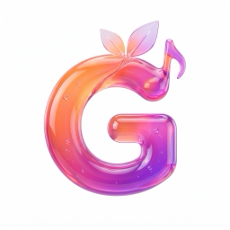
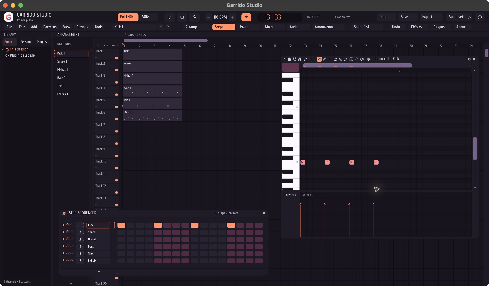
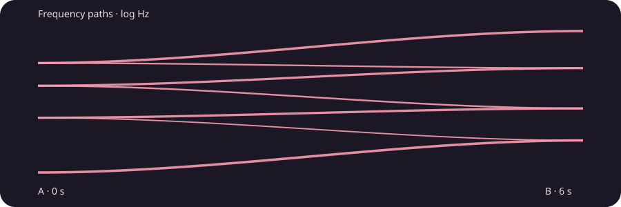

01 · THE COMPARISON
Conventional crossfade
The endpoint tones overlap as their levels change.

Garrido Studio GitHubYOUR MACHINE. YOUR MUSIC.
A music workstation built in Rust.
From your first pattern to your next idea.
macOS · Windows · Linux
By Pelayo Garrido Martínez
MEET YOUR WORKSPACE
Patterns, piano roll, audio and mixing.
One local workspace. Dark by default.

FOLLOW THE IDEA
Build a rhythm in the step sequencer. Shape notes and velocity in the piano roll. Explore the original drums, bass, sampler and six-operator FM.
Repeat and arrange patterns alongside audio clips. Move, trim and split compatible clips, then balance channels through the mixer and routing graph.
Record a bounded take, save a session copy and export your mix or channel stems. Choose WAV, FLAC or AIFF for the next step in your workflow.
SPECTRAL JOURNEY · NATIVE SOUND DESIGN
Move the tonal fingerprints of two sounds through pitch space. Shape a transition. Hold an unexpected hybrid. Print a new texture.

01 · THE COMPARISON
The endpoint tones overlap as their levels change.
02 · THE JOURNEY
The tonal components travel between the two fingerprints.
Same synthetic source fingerprints, duration and overall RMS. Tonal resynthesis creates a new sound; original rhythm, speech and phase are not reconstructed. Auditions start only when you press play.
HEAR THE ENGINE
A short phrase from the included Primer pulso session, rendered by the Garrido Studio engine.
Press play when you are ready.
STAY IN THE SESSION
On your computer.
No account. No subscription.
No cloud audio processing.
MAKE SOMETHING YOURS
Download Garrido Studio 1.2.0.
Explore the included example.
Make your next pattern.
Apple Silicon · macOS 13+
Download for Macx64
Download for Windowsx86_64 · glibc 2.39 · ALSA
Download for LinuxExtract the complete folder and keep its resources together. macOS uses an ad-hoc signature; macOS notarization and Windows publisher signing remain pending. If your system blocks a package, retain its message and check the release notes.
Release notes and verified checksumsA FEW GOOD QUESTIONS
Yes. The commercial music permission covers composing, recording, editing, mixing, exporting and selling your own audio works, including paid audio production services. Rights to any samples or recordings you import remain your responsibility.
The source is available under PolyForm Noncommercial 1.0.0 with a separate commercial music permission. Selling or monetizing the software requires permission from Pelayo Garrido Martínez. Third-party libraries retain their own licenses.
This release supports the exact included first-party CLAP module: eight effects and six instruments. General third-party CLAP and VST hosting are development work.
Selected FLP notes, tempo and pattern-playlist structures are supported, with opaque data preserved and unsupported edits refused. It is partial interoperability. Keep original projects and work on copies.
Recording is bounded by an aggregate four million stereo frames and a maximum of 120 seconds, depending on rate and channel count. Whole-song offline rendering has a 120-second / 96 MiB bound. Long disk-streamed sessions remain development work.
Native CI checks core and editor behavior, builds each platform, tests the included plugins without sound devices, and verifies release archive hashes. Real audio hardware, driver failures, extended editing and clean-machine acceptance need separate testing. See the public validation ledger.